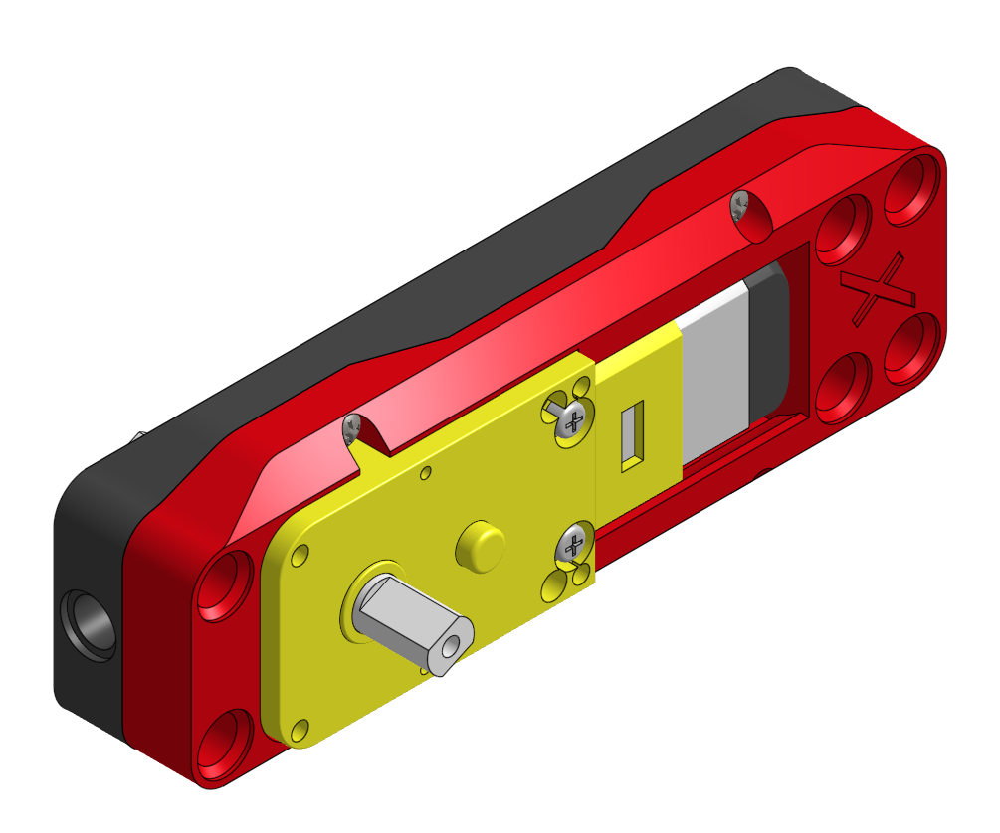
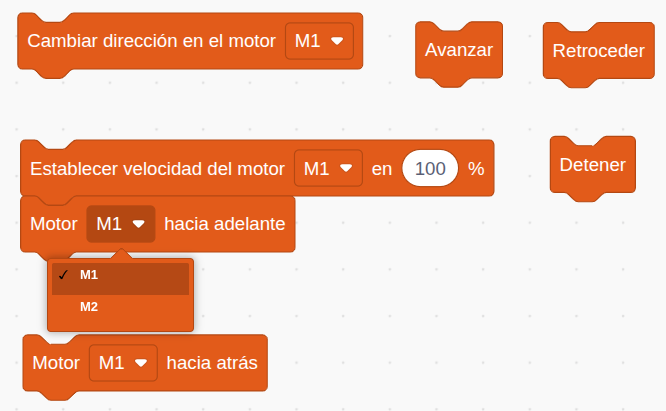

El motorreductor: la fuerza del carro
Es un motor eléctrico con una caja de engranajes que reduce la velocidad y aumenta la fuerza (torque): así el carro mueve cargas más pesadas o sube sin quedarse sin potencia.
Tiene puntos de acople en sus extremos para encajarlo fácilmente en las piezas de bloques de la estructura.
Este actuador se usa en proyectos como un robot tipo sumo, un elevador o una banda transportadora. En nuestro carro, dos motorreductores impulsan las ruedas traseras.
En Octabio Blocks puedes escoger con qué motor actuar cuando hay dos conectados (M1 o M2). Y para mover los dos a la vez, los bloques Avanzar, Retroceder y Detener son la mejor opción: le dan la misma orden a ambos motores al mismo tiempo.
iIdea clave: los engranajes cambian velocidad por fuerza: ruedas con más potencia para el carro.

